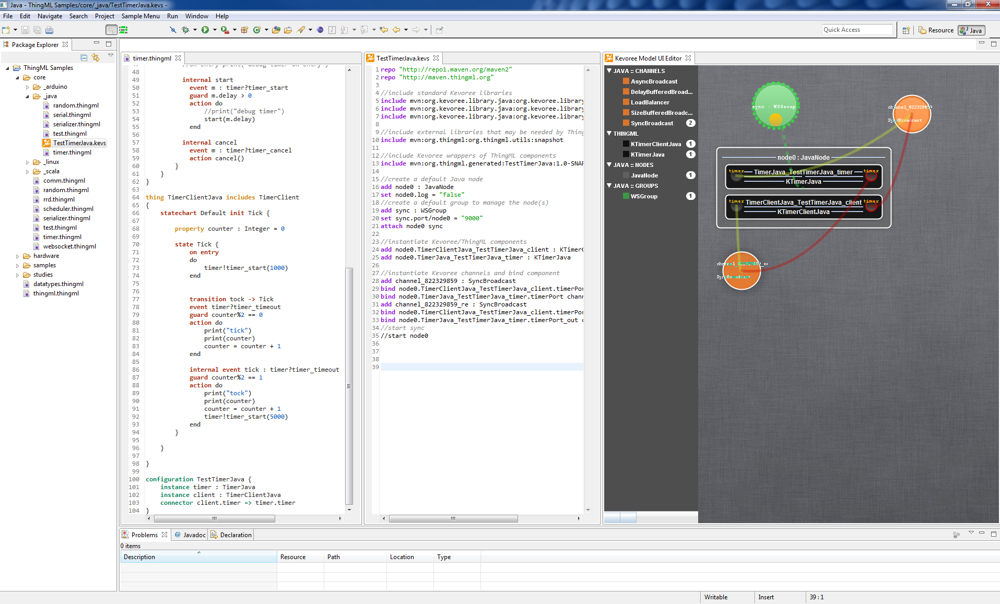

Installation Guide
The HEADS IDE is a set of Eclipse plugins, which provides languages and tools for designing and operating Heterogeneous and Distributed (HD) services.
Complete Eclipse bundles, integrating the HEADS languages, frameworks and tools are available for download:
Just unzip the file corresponding to your OS, and you are ready to go!
